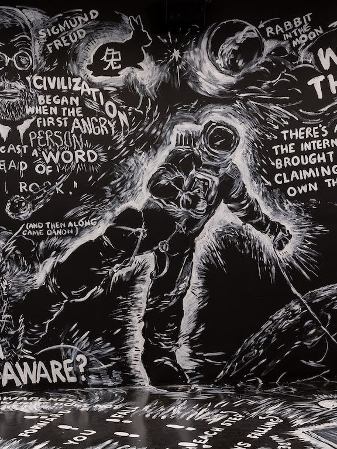

Tecnología, narrativa y experimentación
El trabajo de Laurie Anderson se caracteriza por la integración de tecnologías en sus procesos creativos, no como un fin en sí mismo, sino como una herramienta para expandir el lenguaje artístico.
Utiliza dispositivos electrónicos, procesamiento de voz y medios audiovisuales para construir experiencias que combinan relato y experimentación.
Sus obras suelen desarrollarse como narraciones fragmentadas, donde la voz guía al espectador a través de historias que mezclan lo personal, lo político y lo ficticio. Este enfoque permite explorar nuevas formas de contar, donde la estructura no es lineal y la interpretación queda abierta.


